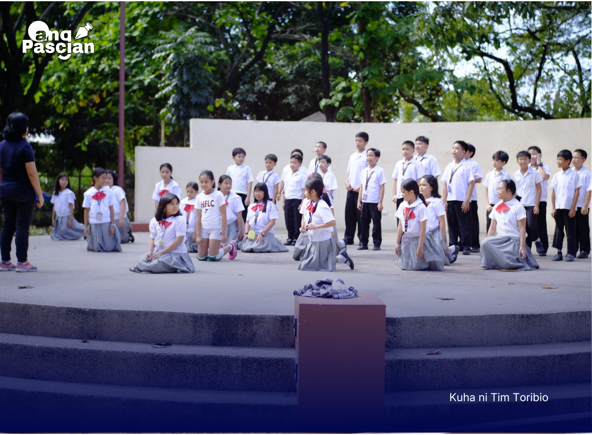

Balita
Araw ng talento ng paaralan naging entablado ng kakayahan ng mga Mag-aaral

Nagpakitang-gilas ang mga mag-aaral sa iba't ibang larangan ng talento sa ginanap na Araw ng Talento ng paaralan kamakailan kung saan ipinamalas nila ang kanilang kakayahan sa musika, sayaw, at pag-arte.
Nilahukan ng mga mag-aaral mula sa iba't ibang baitang ang programa na ginanap sa loob ng paaralan at dinaluhan ng mga guro at kapwa mag-aaral na sumuporta sa mga kalahok. Naging masigla ang atmospera ng programa habang inaabangan ng mga manonood ang iba't ibang pagtatanghal.
Kabilang sa mga ipinakitang talento ang solo singing, group dance performances, at maikling dula na inihanda ng mga kalahok bilang bahagi ng programa. Bawat pagtatanghal ay sinalubong ng masiglang palakpakan mula sa mga manonood.
Ayon sa mga tagapag-ayos ng aktibidad, layunin ng Araw ng Talento na bigyan ng pagkakataon ang mga mag-aaral na maipakita ang kanilang kakayahan at magkaroon ng kumpiyansa sa sarili sa harap ng ibang tao.
Dagdag pa nila, ang mga ganitong programa ay mahalaga upang mahikayat ang mga kabataan na tuklasin at paunlarin ang kanilang mga talento. Nagiging daan din ito upang magkaroon ng mas makulay at makabuluhang karanasan ang mga mag-aaral sa loob ng paaralan.
Sa pagtatapos ng programa, nagpahayag ng pasasalamat ang mga tagapag-ayos sa lahat ng lumahok at sumuporta sa naturang aktibidad na nagbigay ng pagkakataon sa mga mag-aaral na maipakita ang kanilang kakayahan.